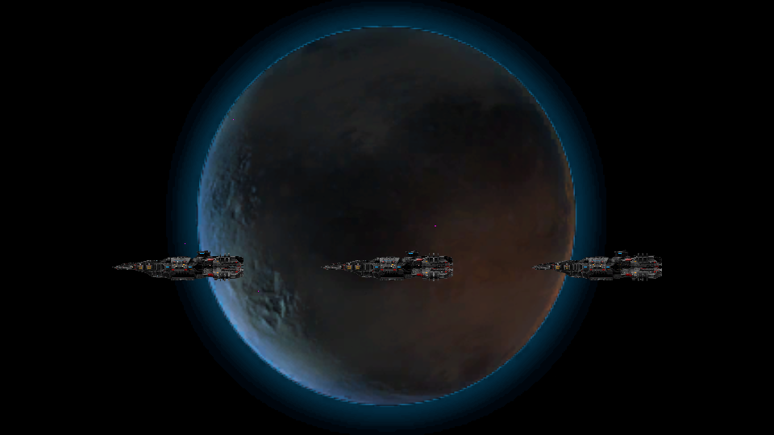

Active Timeline clips
ACTOR MOTION - GOOD - escort (EDITABLE): FollowPath - SIMPLE_STAGE_identity_setup_ship_good | ACTOR ACTIVE - GOOD - escort: GOOD - escort ACTIVE | [System5] ship_good: good | ACTOR MOTION - EVIL - attacker (EDITABLE): FollowPath - SIMPLE_STAGE_identity_setup_ship_evil | ACTOR ACTIVE - EVIL - attacker: EVIL - attacker ACTIVE | [System5] ship_evil: evil | ACTOR MOTION - NEUTRAL - civilian (EDITABLE): FollowPath - SIMPLE_STAGE_identity_setup_ship_neutral | ACTOR ACTIVE - NEUTRAL - civilian: NEUTRAL - civilian ACTIVE | [System5] ship_neutral: neutral | V3 CINEMACHINE DIRECTOR (NATIVE CONTROL): V3 CINEMACHINE - simple_SYSTEM_5_-_THREE_ANIMATED_SPACESHIPS_-_10S | LAYER - simple_location_identity_setup (EDITABLE): Set - SIMPLE_LAYER_identity_setup | LAYER ACTIVE - BACKGROUND_FULLFRAME_simple_location_identity_setup: BACKGROUND_FULLFRAME_simple_location_identity_setup ACTIVE